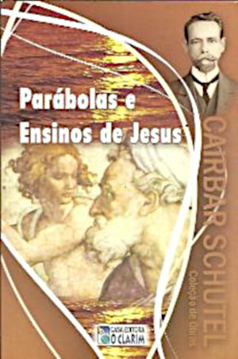

PALESTRA ESPÍRITA
O SÁBADO E O TEMPLO
O ESPIRITISMO E AS VELHAS CRENÇAS
|  |
"Foi numa época semelhante à nossa, em que a Humanidade havia descambado para o terreno acidentado do fanatismo, da superstição e do materialismo, que o Céu se fez ouvir pelo seu maior Expoente, pelo seu mais lídimo Representante. |
O COMEÇO...
- 1º DIA - O Céu e a Terra. - A luz
- 2º DIA - O Firmamento -Separação das águas que estão acima do Firmamento das que lhe estão debaixo.
- 3º DIA - As águas que estão debaixo do Firmamento se reúnem; aparece o elemento árido. - A terra e os mares. - As plantas.
- 4º DIA - O Sol, a Lua e as estrelas.
- 5º DIA - Os peixes e os pássaros.
- 6º DIA - Os animais terrestres. - O homem.
E havendo Deus acabado no dia sétimo a obra que fizera, descansou no sétimo dia de toda a sua obra, que tinha feito. (Gênesis 2:2)
BÍBLIA ONLINE (GÊNEIS 2)7. Dizendo que a criação foi feita em seis dias, terá Moisés querido falar de dias de 24 horas, ou terá empregado essa palavra no sentido de período, de duração?
(...)Não se pode conceber qualquer dúvida a tal respeito, estando dito, no versículo 5: “Ele deu à luz o nome de dia e às trevas o nome de noite; e da tarde e da manhã se fez o primeiro dia.” Isto, evidentemente, só se pode aplicar ao dia de 24 horas, constituído de períodos de luz e de trevas.8. Um dos pontos que mais criticados têm sido na Gênese é o da criação do Sol depois da luz.
 |
18. "Doutra vez entrou Jesus no templo e aí encontrou um homem que tinha seca uma das mãos. — E eles o observavam para ver se ele o curaria em dia de sábado, para terem um motivo de o acusar. — Então, disse ele ao homem que tinha a mão seca: Levanta-te e coloca-te ali no meio. — Depois, disse-lhes: É permitido em dia de sábado fazer o bem ou mal, salvar a vida ou tirá-la?" (...) |
Eles permaneceram em silêncio. — Ele, porém, encarando-os com indignação, tanto o afligia a dureza de seus corações, disse ao homem: Estende a tua mão. Ele a estendeu e ela se tornou sã. Logo os fariseus saíram e se reuniram contra ele em conciliábulo com os herodianos, sobre o meio de o perderem. — Mas, Jesus se retirou com seus discípulos para o mar, acompanhando-o grande multidão de povo da Galiléia e da Judéia — de Jerusalém, da Iduméia e de além Jordão; e os das cercanias de Tiro e de Sídon, tendo ouvido falar das coisas que ele fazia, vieram em grande número ao seu encontro. (S. Marcos, 3:1 a 8.)
A GÊNESE > Os milagres > Capítulo XV - Os milagres do Evangelho > Curas > Mão seca |
19. "Todos os dias de sábado Jesus ensinava numa sinagoga. — Um dia, viu ali uma mulher possuída de um Espírito que a punha doente, havia dezoito anos; era tão curvada, que não podia olhar para cima. — Vendo-a, Jesus a chamou e lhe disse: Mulher, estás livre da tua enfermidade. — Impôs-lhe ao mesmo tempo as mãos e ela, endireitando-se, rendeu graças a Deus. " (...) |
(...)"Mas, o chefe da sinagoga, indignado por haver Jesus feito uma cura em dia de sábado, disse ao povo: Há seis dias destinados ao trabalho; vinde nesses dias para serdes curados e não nos dias de sábado.O Senhor, tomando a palavra, disse-lhe: Hipócrita, qual de vós não solta da carga o seu boi ou seu jumento em dia de sábado e não o leva a beber? — Por que então não se deveria libertar, em dia de sábado, dos laços que a prendiam, esta filha de Abraão, que Satanás conservara atada durante dezoito anos? A estas palavras, todos os seus adversários ficaram confusos e todo o povo encantado de vê-lo praticar tantas ações gloriosas." (S. Lucas, 13:10 a 17.)
A GÊNESE > Os milagres > Capítulo XV - Os milagres do Evangelho > Curas > A mulher curvada |
21. "Depois disso, tendo chegado a festa dos judeus, Jesus foi a Jerusalém. — Ora, havia em Jerusalém a piscina das ovelhas, que se chama em hebreu Betesda, a qual tinha cinco galerias — onde, em grande número, se achavam deitados doentes, cegos, coxos e os que tinham ressecados os membros, todos à espera de que as águas fossem agitadas — Porque, o anjo do Senhor, em certa época, descia àquela piscina e lhe movimentava a água e aquele que fosse o primeiro a entrar nela, depois de ter sido movimentada a água, ficava curado, qualquer que fosse a sua doença." (...) |
(...)"Ora, estava lá um homem que se achava doente havia trinta e oito anos. — Jesus, tendo-o visto deitado e sabendo-o doente desde longo tempo, perguntou-lhe: Queres ficar curado? — O doente respondeu: Senhor, não tenho ninguém que me lance na piscina depois que a água for movimentada; e, durante o tempo que levo para chegar lá, outro desce antes de mim. — Disse-lhe Jesus: Levanta-te, toma o teu leito e vai-te. — No mesmo instante o homem se achou curado e, tomando de seu leito, pôs-se a andar. Ora, aquele dia era um sábado. " (...) (S. João, 5:1 a 17.)
A GÊNESE > Os milagres > Capítulo XV - Os milagres do Evangelho > Curas > O paralítico da piscina |
24. "Ao passar, viu Jesus um homem que era cego desde que nascera; — e seus discípulos lhe fizeram esta pergunta: Mestre, foi pecado desse homem, ou dos que o puseram no mundo, que deu causa a que ele nascesse cego? — Jesus lhes respondeu: Não é por pecado dele, nem dos que o puseram no mundo; mas, para que nele se patenteiem as obras do poder de Deus. É preciso que eu faça as obras daquele que me enviou, enquanto é dia; vem depois a noite, na qual ninguém pode fazer obras. — Enquanto estou no mundo, sou a luz do mundo. Tendo dito isso, cuspiu no chão e, havendo feito lama com a sua saliva, ungiu com essa lama os olhos do cego — e lhe disse: Vai lavar-te na piscina de Siloé, que significa Enviado." (...) |
(...)"Ele foi, lavou-se e voltou vendo claro. Seus vizinhos e os que o viam antes a pedir esmolas diziam: Não é este o que estava assentado e pedia esmola? Uns respondiam: É ele; outros diziam: Não, é um que se parece com ele. O homem, porém, lhes dizia: Sou eu mesmo. — Perguntaram-lhe então: Como se te abriram os olhos? — Ele respondeu: Aquele homem que se chama Jesus fez um pouco de lama e passou nos meus olhos, dizendo: Vai à piscina de Siloé e lava-te. Fui, lavei-me e vejo. — Disseram-lhe: Onde está ele? Respondeu o homem: Não sei. Levaram então aos fariseus o homem que estivera cego. — Ora, fora num dia de sábado que Jesus fizera aquela lama e lhe abrira os olhos." (...) (S. João, 9:1 a 34.)
A GÊNESE > Os milagres > Capítulo XV - Os milagres do Evangelho > Curas > Cego de nascença| "Era por isso que os judeus perseguiam a Jesus, porque ele fazia essas coisas em dia de sábado. — Então, Jesus lhes disse: Meu Pai não cessa de obrar até ao presente e eu também obro incessantemente. (S. João, 5:1 a 17.)" |
- Infância
- Adolescência
- Idade adulta
- Maturidade


|
José Antonio Meléndez Rodríguez, mais conhecido por Tony Meléndez, é um cantor, compositor e violonista nicaraguense, que toca músicas católicas. Nascimento: 9 de janeiro de 1962 (idade 57 anos), Rivas, Nicarágua https://pt.wikipedia.org/wiki/Tony_Mel%C3%A9ndez |
| Durante o dia, Adriana era responsável pela limpeza do chão e dos banheiros numa unidade de saúde. À noite, seguia em busca de seu sonho na universidade. |
Adriana Queiroz, de 38 anos, diz que enfrentou vários desafios até chegar à magistratura, entre eles a falta de dinheiro. Com cinco pós-graduações e cursando letras, ela afirma que 'estudo é fundamental'. https://g1.globo.com |
| Dez passos para alcançar seus sonhos nos revela a trajetória de superação de uma jovem negra, de família humilde, que um dia assumiu a missão de realizar o grande sonho de se tornar juíza de Direito. Enfrentando obstáculos sociais, financeiros e pessoais, Adriana nos prova que, dotados de inspiração divina, é possível encarar angústias e manter a esperança, mesmo que para isso tenhamos de enfrentar e lutar bravamente contra paradigmas e conceitos preestabelecidos. | https://www.amazon.com.br/Passos-Para-Alcan%C3%A7ar-Seus-Sonhos/dp/8542809629 |
PALESTRA ESPÍRITA
O SÁBADO E O TEMPLO
O ESPIRITISMO E AS VELHAS CRENÇAS